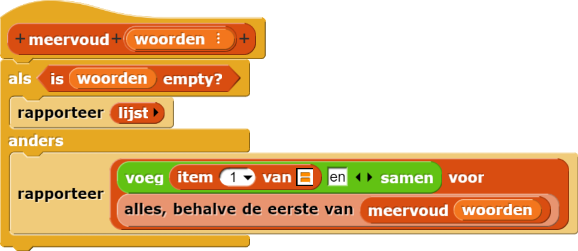
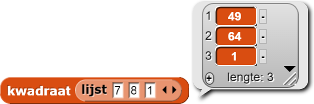
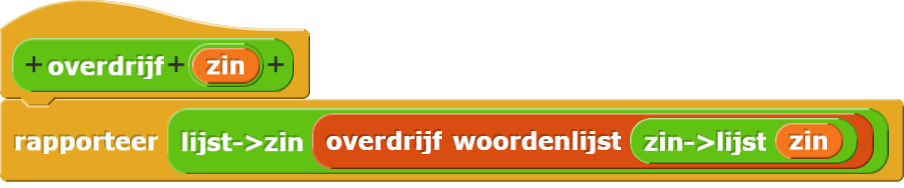

meervoudblok gemaakt wordt,
hier.
Hieronder staat het meervoudblok van Les 1. Het neemt een lijst met woorden als
invoer en rapporteert een lijst met deze woorden in meervoud. Ook al is er een manier om het blok te bouwen
met map is er een reden waarom we het recursief doen.

Het idee is that je een lijst kan splitsen in het eerste element en de rest, dan maak je het meervoud
van het eerste element en je doet een recursieve aanroep voor de rest. Het voorblok ziet
er raar uit door de verschillende invoeren (een element en een lijst) maar het zet het meervoud van
het eerste woord weer terug in de lijst met de rest van de woorden.
Dit patroon kan je gebruiken om veel handige recursieve rapporteurs te bouwen die een simpel basisgeval en een simpele recursieve aanroep hebben.
Voer de volgende opdrachten uit met recursie, niet met functies van hogere orde.
meervoud aan te passen.
kwadraatblok dat een lijst van getallen als invoer neemt en een lijst met de
kwadraten van die getallen rapporteert.

overdrijfblok dat een zin als invoer neemt en een zin rapporteert waar alles
overdreven is. Dus bijvoorbeeld "goed" is vervangen door "geweldig", "slecht" door
"verschrikkelijk", "mooi" door "prachtig", "mag" door "moet" etc.
Maak een "inpak"-functie die de zin verandert in een lijst woorden en weer terug naar een zin:

Je zal ook een hulpfunctie overdrijf woord willen maken dat naar één woord kijkt
en
kijkt of het dat woord kan overdrijven.